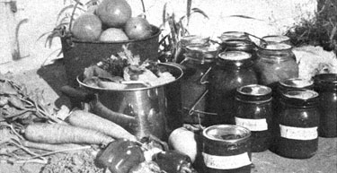

Here we are in our first Iowa winter, with plenty of time to consider whether or not to plant our "field" of an acre and a quarter in tomatoes. The nearby Heinz cannery promises profits of up to $1,000 . . . if the crop is good. In spite of an advanced education in horticulture, however, I have a black thumb and, all my garden successes are tempered with failures. True, back in Ohio it was, only once in many years that the tomatoes flopped, but even once is enough to make us cautious.
"Wait and see what the new soil and climate are like," suggests my family. "Find out what problems we have in the garden before you commit us to a summer's work in the fields . . . maybe all in vain." Reasonable enough.
FEBRUARY 13: The Caro Red seed arrived. This is our favorite tomato: not quite red but darker than orange . . . meaty, delicious and low in acid. Since many varieties can be purchased as plants from the local greenhouse, we'll concentrate our meager resources on Caro Red . . . which can't be bought around here.
Back when we had a greenhouse, this was Tomato Planting Day. The seedlings-grown cool, with no setbacks-would be sturdy plants with tiny fruit by May 15. But here in Iowa it's 20 below, with snowdrifts over our heads, and all the growing space we have is a sunny but frost-covered window. Now is the time to wait.
FEBRUARY 25: A neighbor called to ask if it was time to plant tomatoes yet. "We ought to wait," I told her. (Then I thought, "Maybe I shouldn't have said that if she was in the mood. Seed planting and watching is cheap therapy and-winter-weary as we are-we need it now.") "Plant petunias instead," I suggested.
MARCH 27: Planted seeds today: put them in a clay pot of soil with an inch of vermiculite (sterile medium to guard against disease) on top and covered the whole thing with a plastic bag to keep in moisture. Maybe I waited too long . . . even March goes fast.
APRIL 1: No fooling, the seeds are sprouting! I took off the plastic bag and moved the pot from the warm table to the brightest spot on the windowsill. The later the planting, the quicker the tomatoes come up.
APRIL 15: It rains every day. The seedlings look leggy.
APRIL 21: The tomatoes are all stem and pale green. The roots haven't penetrated the soil enough yet. I fed them with liquid plant food.
APRIL 24: The plant food helped. I should transplant the seedlings to grow at least two inches apart, but where could I put them? There's no sunny spot in Iowa. It's a mistake to let them get stunted like this. If worst comes to worst I'll have to buy whatever plants I can get.
MAY 5: Voila! Sunshine! I set the tomato plants out in the cold frame for the day. Easy now. . . that's quite an adjustment. I'll bring them in at night.
MAY 15: This is supposed to be Setting Out Day. It's still not warm, though, and the wind is wicked. I think my plants have given up . . . they're short and stunty and just not growing at all.
The soil in the pots dries out in a few hours. To alleviate this I've planted the seedlings right in the cold frame and surrounded them with a plastic "fence" to protect them from the winds. I think it's too late, though. I'll hope a few more days, but the tomatoes look bad.
MAY 20: Another call for information from my neighbor. "Put the plants outside in a very sheltered spot for just a little while every day until they've hardened off," I told her. "It's really too warm and dark in the house . . . that's why your seedlings got so tall and spindly. And right now it's too cool and windy outside, We need a happy medium, a real covered cold frame to bridge the gap until the tissues toughen." I'm so good with advice and theory . . . and meanwhile my own plants just sit there and look at me, refusing to die or to grow.
We're going on vacation in a week. I'll give them until we get back, but I already know there won't be any early tomatoes.
MAY 21: I bought a dozen plants and set them out to shiver in the wind. I've put some in black plastic mulch (very hard to work with, but supposed to be effective. I'll see.)
MAY 25: Something is eating my boughten tomatoes, especially the ones in the plastic. Even though I never had cutworms in Ohio, I should have taken precautions. Better late than never? Anyhow, I put orange juice cans around the bases of the plants, half in and half out of the ground.
MAY 28: It wasn't cutworms. It was rabbits. They eat tomatoes out of a can, too. I give up. I'm going home to mother.
JUNE 6: My home-grown plants are home but not growin'. I planted the four biggest in the garden and bought a dozen and a half more (the only ones left at the greenhouse were very tall but fairly sturdy).
I have a friend who puts in tomatoes with a posthole digger and has very good luck. Me, I'm too lazy to dig holes two feet deep. Instead, I set the plants horizontally in trenches about six inches deep . . . with the roots spread out, most of the stem covered and only the top foot of foliage bent up above ground. Roots will form all along the stem now. I mulched the area well with old hay, because that whole row is no place to be hoeing from now on.
Of the dozen bought plants I set out earlier, six survive. The three in the plastic are starting to grow . . . the others are just sitting there. My mother suggested blood meal for the rabbits. Since they're vegetarians, the smell is supposed to keep them away ... and the stuff is also an excellent source of organic nitrogen. I took her advice and dug some into the surface soil around the tomatoes.
JUNE 12: At last the plants are taking off (the ones in the black plastic are definitely doing better). Either the blood meal works or the rabbits are full . . . at any rate, there's no more damage. The rest of the garden looks great.
In Ohio we used to get our tomato stakes at the dump, but the local facility is an "off-limits" landfill. They raise the crop in fields around here without any supports. It should work . . . I think I'll just let the vines lie on the mulch. Nevertheless, I'm pruning off the suckers from the roots and pinching the side shoots back after the first set of leaves.
JULY 4: The plants are going wild! I can't prune fast enough. The ones in the plastic are growing more quickly, becoming regular shrubs. They're blooming, but have no little tomatoes yet. I wonder if they got too much nitrogen? Time to pick peas and beans . . . the tomatoes are on their own.
JULY 20: Only a few little tomatoes on the shrubs in the plastic. Never saw such plants . . . all foliage and no produce. There's definitely an overbalance of nitrogen in this soil and the blood meal made it worse. It's too late to correct the problem this year, but we'll apply rock phosphate and granite dust in the fall and be more careful in the future. Canning beans and beets like fury. Too busy to worry about tomatoes.
AUGUST 1: Now we are starting to worry about the tomatoes. Lots of blooms, even a batch of small green fruit, but nothing to eat.
AUGUST 8: Fair time! We had our first try at showing vegetables, and did very well. Hardly anyone has tomatoes: Too many cool nights, they say. A few of ours have ripened, but something else got there first. I'm bringing everything pink or better to the kitchen windowsill. I don't mind sharing, but the bugs can't have it all. Besides, water sits on top of that plastic and causes rot in spots.
AUGUST 20: Sometimes in Ohio we didn't start canning until now. Here we're just starting to have enough to eat. Sliced tomatoes in every sandwich and more for supper . . . they do taste good! This is the only way to live.
We have one plant of little yellow pear-shaped tomatoes at the back door, and it's really loaded. The fruit is sweeter than green grapes . . . we eat some every time we walk by. I made a batch of preserves with them. Delicious, but what a lot of peeling!
SEPTEMBER 8: Plenty to eat but not enough to can. Winter is coming and I'm running scared. I bought a bushel of tomatoes, added whatever we had extra and got 20 quarts of juice.
My purchases were a canning variety with a thick, tasteless, colorless skin . . . probably bred to resist handling, and no doubt treated with chemical fertilizers and pesticides. I was afraid to ask. Desperate as I am, though, the difference between these and our home-grown product was remarkable. I haven't bought tomatoes in years and certainly don't recommend it.
SEPTEMBER 16: This is ridiculous! Frost could come any time and I have nothing to lose. I made my way up the row and pulled the vines firmly away from the piles of fine tomatoes-most of them still green-that really are hiding underneath. Now they can get some sun. I broke off yards of greenery, everything above the last set fruits. Any blossoms that are coming along now won't have time to ripen and will only sap the strength of the plant away from the ripening produce . . . so I was ruthless.
SEPTEMBER 27: Wow! Like bad children, those plants only needed discipline. Every other day I pick tomatoes by the five-gallon bucketful, spread the not-quite-ripes on the hay pile and make kettles of juice. We like a drink something like V-8, so I put in all the celery leaves and stems, onions and carrots I feel like cleaning-plus a bit of kale, basil, comfrey and chard-and then fill the pot with tomatoes, red and yellow. I strain out the juice with a food mill, add seasoning and a touch of sugar, boil the brew and seal it in my weird assortment of jars that aren't strong enough for the longer cooking of other vegetables. This makes a thick, delicious juice which I use in any recipe that calls for tomatoes, sauce, paste or whatever. If you add a little soda to counteract the acidity, it even makes a good cream soup. I know of one family that cans the pulp left in the food mill for vegetable soup, but we give ours to the pigs. They grow fast in canning season.
SEPTEMBER 30: Sixty quarts of juice now . . . that should do us. I've started canning the thinner top liquid to drink, adding chili pepper and oregano to the thick part and cooking it down for pizza sauce (12 pints so far). I even gave away a bushel of tomatoes!
OCTOBER 3: Light frost has slowed the plants down, but not stopped them.
OCTOBER 10: Light frosts every night now. I picked a box of nice green tomatoes and spread them out in the cellar where they'll keep ripening until almost Thanksgiving. Either we've had our fill by now, however, or they don't taste quite so good. I used as much unripe fruit as I could in mincemeat and made green tomato pickles and relish. The jars and shelves are almost full.
OCTOBER 25: Now that the snow is melted, I pulled out the vine by the back door and dragged it to the compost pile. From one root it strung out five feet in both directions.
I'm glad I didn't plant the field in tomatoes. It was best to size up the climate and soil first: I've come to terms with the former and praise the Lord for the latter. I'll practice in the garden for one more season, I think, before I try a cash crop. But it wasn't such a bad year for tomatoes, after all.
|
 Gardening isn't all know-how: However green your thumb, you're still at the mercy of the weather. In a long spell of contrary conditions, all you can do is throw out the rule book, use your common sense and hope for the best. Here's how one experienced grower nursed her tomato crop through a tough year. |
|
|